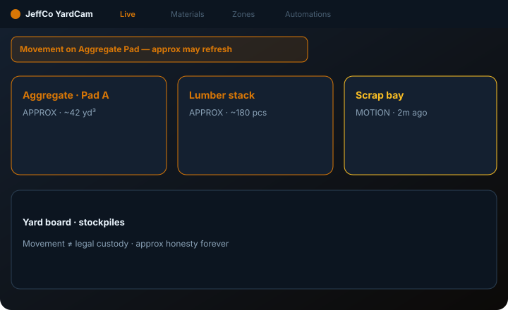
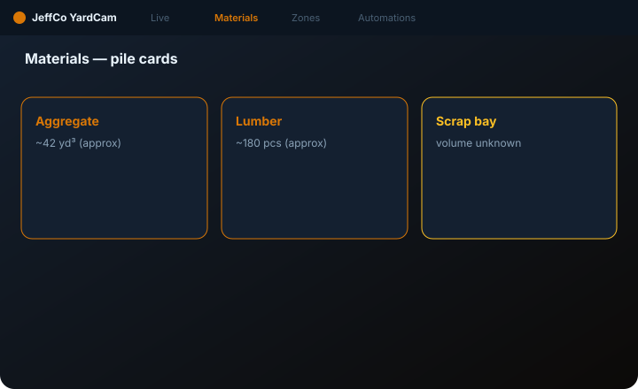
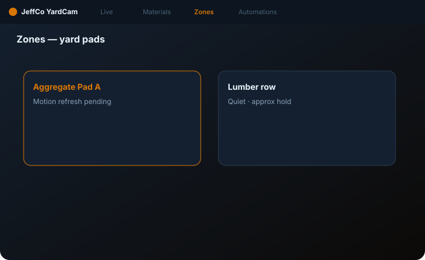

YardCam
Materials / yard inventory ops — piles, movement, approx counts with honesty.
For yard leads who need Materials CRM and movement alerts — not fake-precise WMS gospel.

What it does
YardCam tracks materials and yard zones: Live feed with pile overlays, Materials CRM (nicknames welcome), storage Zones, and notify on movement / count drift.
Counts are approx until calibrated. Movement = seen moved + clip — not chain-of-custody legal proof day one. No face ID for “who took the pallet.”
Step E is Notify me exclusive. Dense WMS jargon and exact metrology stay Advanced or out of scope until calibrated sensors exist.
Capabilities
Day-one surface vs Advanced / gated — from Clarity GH Pages pack.
Day-one surface
Live
Day oneYard feed + pile overlays
Materials
Day onePiles/objects CRM (nicknames OK)
Zones
Day oneStorage regions
Automations
Day oneNotify only (Step E exclusive)
Advanced / gated
Exact metrology / legal custody
OutNot day one
Face ID thief dossiers
OutForbidden
How to use it
First-run (wizard)
Add a feed
covering the yard.
Draw zones / mark piles
Materials board starts here.
First material catch proof
Continue locked until proof.
Step E: Notify me
exclusive (dry-run) or Skip.
Read approx-count honesty on Materials before Finish
—
Add feed
—
Draw zones / mark piles
—
First material catch proof
—
Step E
Notify me exclusive (dry-run).
Read approx-count honesty
On Materials.
Daily loop
Live materials scan
movement strip first
Update Materials nicknames / status
—
Investigate movement alerts with clips
—
Recalibrate counts when layout changes
—
Badge: movement / drift / cam
not sleeping workers
Live materials scan
—
Update Materials
Nicknames / status.
Investigate movement
With clips.
Recalibrate counts
When layout changes.
Badge
Movement / drift / cam.
Honesty / trust
Approx counts; movement ≠ legal custody.
- Approx counts until calibrated — never fake precision.
- Movement = seen moved + clip ≠ legal chain-of-custody day one.
- No face ID for who moved material.
- Step E Notify only; dry-run ≠ live spam until armed.
- Don’t reuse HiveCam traffic metaphors for piles (or vice versa).
Screenshots
Domain frames elevated from Design UI mocks + Clarity captions.


Get started
Clone jeffco-yardcam-module · read docs · open setup wizard.